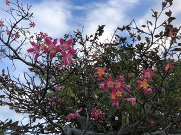
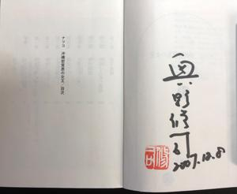
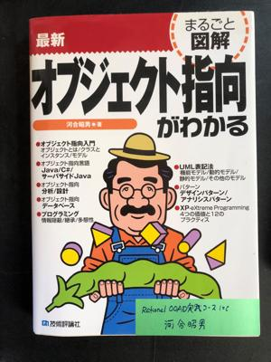

うるがいの話 ある日
最新: 寄贈【うるがいの話 ある日】とは 一日だけのプログです
『うるがいの話』の最新一日だけのプログで、通信料が少なく経済的だ。カニの画像をクリックすると全ての日付が載る『うるがいの話』サイトを表示します
|
|
【うるがいの話】 うるがい(ｳﾙｶﾞｲ urugai)とは、『もずくがに』の名前でとても大きくなります。 |
|---|---|
|
|
【カミマヤーの話】 猫のことを方言でマヤーといいます。カミマヤーとは、神の猫のことです。 |
|
【タナガーの話】 たながー（ﾀﾅｶﾞｰtanagaa）とは手長えびのことで、何種類かあり大きいのは車 エビぐらいになります。 |

|
【ぶながぁの話】 ぶながー(bunagaa)とは、赤い髪の毛、赤い身体、そして身長は１ｍ２０ｃｍ ぐらい、川の蟹を食べているの目撃された。場所は沖縄県国頭郡大宜味村のと ある村僕の隣近所に住んでいる爺さんから、聞いた話です。 |
|
|
【ギーマの話】 ギーマ(giima)とは、山原の里山に咲くスズランに似た、 花を付けます。実は食べられます、 気が付くと口の周りが紫になっています。 |
2021年12月14日 (火）寄贈
16:06

『ナツコ 沖縄密貿易の女王』著者）奥野修司の表紙を開けると、著者本人な
るサインが載っている。おお、こんなの有り？と後ろを見ると寄贈とある。こ
んなの寄贈するケと思った、本サインというと 私もあるが。
 
子供に振り込みをしたと連絡すると、振り込まれていない！と返信があった。
ん！、もしかして誤ってビットコイン先に振り込んだ？、おお、そうだとすれ
ばもう戻せない、いやいやそれは降りこんだ金融機関が違う。そして記帳させ
た通帳を見る、取引がない！、それでと降りこんだ時のはんぺんをみると「暗
証番号が間違っています」、おお、ヤバイでは降りこんだ筈のお札は・・・・
やばい、ＡＴＭに入れたままにしていたかも。あわてて、金融機関に行く。警
備員にお札をＡＴＭに入れたままにしたみたいだが、お金があったとか聞いて
いませんかと尋ねると、いいえ、でも心配しなくても全てカメラを指しながら
写されているから、店長に聞いてみましょう。店長に話すと、いいえお札がＡ
ＴＭに残っていたことは無いです。勘違いをしていませんか、いや、・・店長
と通帳やはんぺんを見せながらやり取りが、続く。分かった！、私の勘違いで
すと。勘違いの詳細は割愛、落ち着きが無くなっている、よく考えると振り込
みの時のエラーの紙や、記帳させた通帳をその時点で（運命の分岐点）見てい
れば気づくはず。こころに焦りがあるかも、おお恥ずかしい。そのあと振り込
みをし、子供から入金があったと連絡を受ける。
１５時５４分 ビットコインの総資産 ￥１５，３５８
かなり下がっている